Pre-analysis for three datasets
Table of Contents
1 Mammary gland epithlial cells GSE103272
estrus (2729 cells) and diestrus (2439 cells)
1.1 P7D diestrus
setwd('/n/core/Bioinformatics/analysis/CompBio/cbio.xig.103/data/package_v2') library(Seurat) p7d.data <- Read10X(data.dir = "GSE103272/P7D/filtered_gene_bc_matrices") p7d <- CreateSeuratObject(raw.data = p7d.data, min.cells = 3, min.genes=200) mito.genes <- grep(pattern = "^Mt", x = rownames(x = p7d@data), value = TRUE) percent.mito <- Matrix::colSums(p7d@raw.data[mito.genes, ])/Matrix::colSums(p7d@raw.data) p7d <- AddMetaData(object = p7d, metadata = percent.mito, col.name = "percent.mito") VlnPlot(object = p7d, features.plot = c("nGene", "nUMI", "percent.mito"), nCol = 3) savePlot('p7d.qa.png') p7d <- NormalizeData(p7d) p7d <- FindVariableGenes(p7d, x.low.cutoff = 0.05, x.high.cutoff = 8, y.cutoff = 0.5) length(x = p7d@var.genes)## 1406 savePlot('p7d.var.gene.png') p7d <- ScaleData(p7d, genes.use = p7d@var.genes, vars.to.regress = c("nUMI","percent.mito")) p7d <- RunPCA(p7d, pcs.compute = 20, weight.by.var = FALSE,do.print=FALSE) PCElbowPlot(object = p7d) savePlot('p7d.pce.png') ## FindClusters p7d <- FindClusters(p7d, reduction.type = "pca", dims.use = 1:8, resolution=0.8, save.SNN = T,temp.file.location=".",force.recalc = TRUE) p7d <- RunTSNE(p7d, dims.use = 1:8, do.fast = T) TSNEPlot(object = p7d, do.label = T, label.size = 6, plot.title='P7D') savePlot('p7d.tsne.png') saveRDS(p7d, file = "p7d.RDS") ## FindAllMarkers p7d.markers <- FindAllMarkers(object = p7d, only.pos = TRUE, min.pct = 0.25, thresh.use = 0.25) write.csv(p7d.markers,file='p7d.markers.csv')
QA/QC
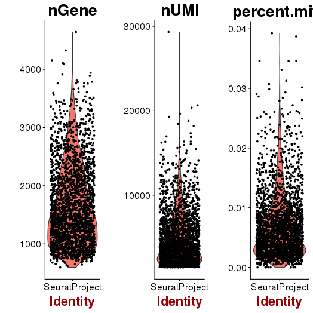 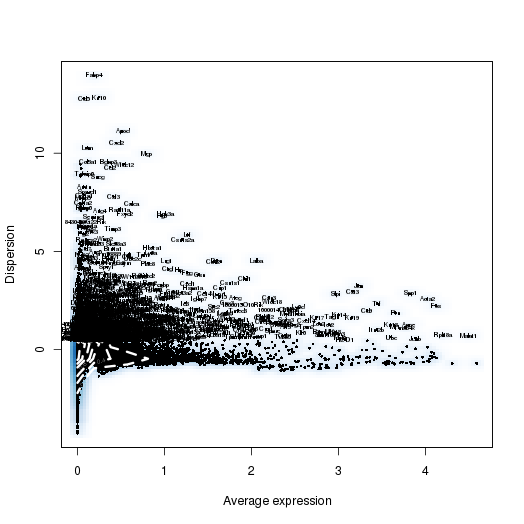
PCA
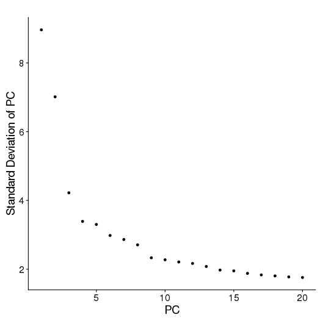
Clusters and markers
Seurat object p7d.RDS
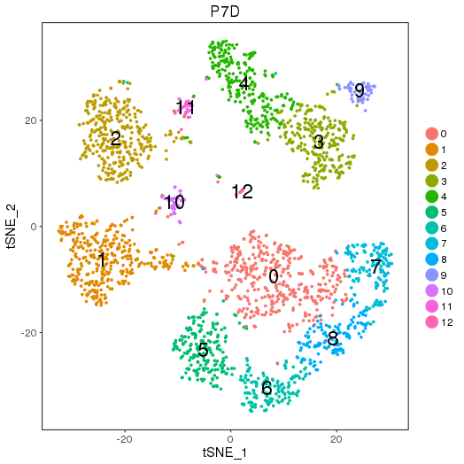
1.2 P7E estrus
setwd('/n/core/Bioinformatics/analysis/CompBio/cbio.xig.103/data/package_v2') library(Seurat) p7e.data <- Read10X(data.dir = "GSE103272/P7E/filtered_gene_bc_matrices") p7e <- CreateSeuratObject(raw.data = p7e.data, min.cells = 3, min.genes=200) mito.genes <- grep(pattern = "^Mt", x = rownames(x = p7e@data), value = TRUE) percent.mito <- Matrix::colSums(p7e@raw.data[mito.genes, ])/Matrix::colSums(p7e@raw.data) p7e <- AddMetaData(object = p7e, metadata = percent.mito, col.name = "percent.mito") VlnPlot(object = p7e, features.plot = c("nGene", "nUMI", "percent.mito"), nCol = 3) savePlot('p7e.qa.png') p7e <- NormalizeData(p7e) p7e <- FindVariableGenes(p7e, x.low.cutoff = 0.05, x.high.cutoff = 8, y.cutoff = 0.5) length(x = p7e@var.genes)##1440 savePlot('p7e.var.gene.png') p7e <- ScaleData(p7e, genes.use = p7e@var.genes, vars.to.regress = c("nUMI","percent.mito")) dim(p7e@data) ## 2728 cells p7e <- RunPCA(p7e, pcs.compute = 20, weight.by.var = FALSE,do.print=FALSE) PCElbowPlot(object = p7e) savePlot('p7e.pce.png') ## FindClusters p7e <- FindClusters(p7e, reduction.type = "pca", dims.use = 1:6, resolution=0.8, save.SNN = T,temp.file.location=".",force.recalc = TRUE) p7e <- RunTSNE(p7e, dims.use = 1:6, do.fast = T) TSNEPlot(object = p7e, do.label = T, label.size = 6, plot.title='P7E') savePlot('p7e.tsne.png') saveRDS(p7e, file = "p7e.RDS") ## FindAllMarkers p7e.markers <- FindAllMarkers(object = p7e, only.pos = TRUE, min.pct = 0.25, thresh.use = 0.25) write.csv(p7e.markers,file='p7e.markers.csv')
QA/QC
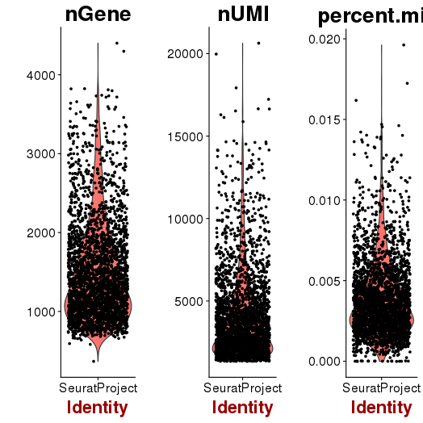 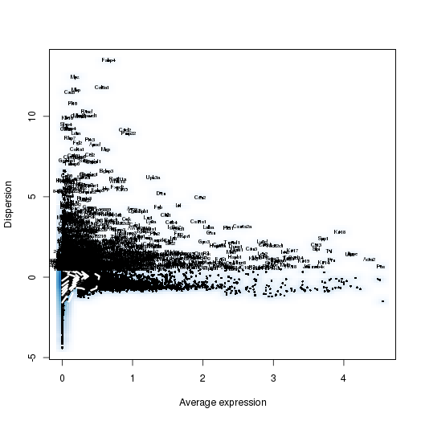
PCA
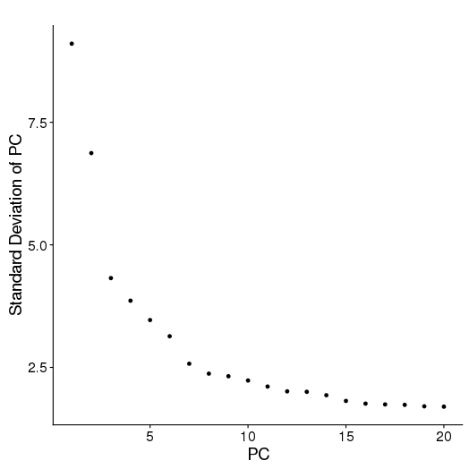
Clusters and markers
Seurat object p7e.RDS
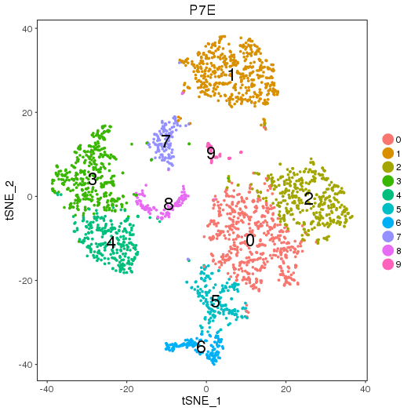
1.3 P7 combined
setwd('/n/core/Bioinformatics/analysis/CompBio/cbio.xig.103/data/package_v2') library(Seurat) p7d.data <- Read10X(data.dir = "GSE103272/P7D/filtered_gene_bc_matrices") p7e.data <- Read10X(data.dir = "GSE103272/P7E/filtered_gene_bc_matrices") colnames(p7d.data)=paste0('p7d-', colnames(p7d.data)) colnames(p7e.data)=paste0('p7e-', colnames(p7e.data)) p7.data = cbind(p7d.data, p7e.data) p7 <- CreateSeuratObject(raw.data = p7.data, min.cells = 3, min.genes=200) mito.genes <- grep(pattern = "^Mt", x = rownames(x = p7@data), value = TRUE) percent.mito <- Matrix::colSums(p7@raw.data[mito.genes, ])/Matrix::colSums(p7@raw.data) p7 <- AddMetaData(object = p7, metadata = percent.mito, col.name = "percent.mito") VlnPlot(object = p7, features.plot = c("nGene", "nUMI", "percent.mito"), nCol = 3) savePlot('p7.qa.png') p7 <- NormalizeData(p7) p7 <- FindVariableGenes(p7, x.low.cutoff = 0.05, x.high.cutoff = 8, y.cutoff = 0.5) length(x = p7@var.genes)##1218 savePlot('p7.var.gene.png') p7 <- ScaleData(p7, genes.use = p7@var.genes, vars.to.regress = c("nUMI","percent.mito")) p7 <- RunPCA(p7, pcs.compute = 20, weight.by.var = FALSE,do.print=FALSE) PCElbowPlot(object = p7) savePlot('p7.pce.png') ## FindClusters p7 <- FindClusters(p7, reduction.type = "pca", dims.use = 1:8, resolution=0.6, save.SNN = T,temp.file.location=".",force.recalc = TRUE) p7 <- RunTSNE(p7, dims.use = 1:8, do.fast = T) TSNEPlot(object = p7, do.label = T, label.size = 6, plot.title='P7 Combined') savePlot('p7.tsne.png') saveRDS(p7, file = "p7.RDS")
QA/QC
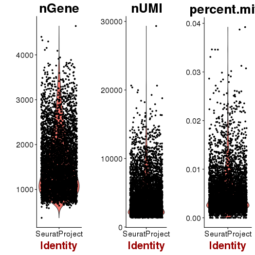 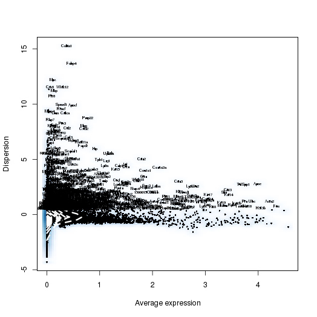
PCA
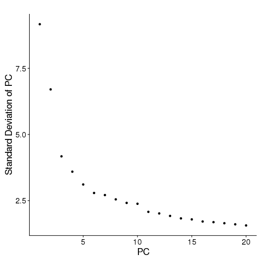
Clusters
Seurat object p7.RDS
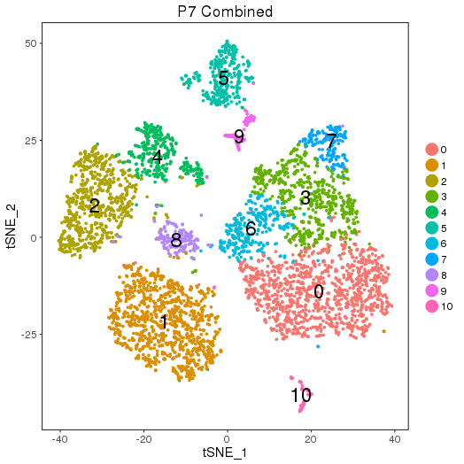
2 IFN-beta-stimulated PBMCs GSE96583
2.1 Single sample
setwd('/n/core/Bioinformatics/analysis/CompBio/cbio.xig.103/data/package_v2') library(Seurat) ctrl.data <- read.table("GSE96583/immune_control_expression_matrix.txt", sep = "\t") stim.data <- read.table("GSE96583/immune_stimulated_expression_matrix.txt", sep = "\t") # Set up control object ctrl <- CreateSeuratObject(raw.data = ctrl.data, project = "IMMUNE_CTRL", min.cells = 5) ctrl@meta.data$stim <- "CTRL" ctrl <- FilterCells(ctrl, subset.names = "nGene", low.thresholds = 500, high.thresholds = Inf) ctrl <- NormalizeData(ctrl) ctrl <- ScaleData(ctrl, display.progress = F) # Set up stimulated object stim <- CreateSeuratObject(raw.data = stim.data, project = "IMMUNE_STIM", min.cells = 5) stim@meta.data$stim <- "STIM" stim <- FilterCells(stim, subset.names = "nGene", low.thresholds = 500, high.thresholds = Inf) stim <- NormalizeData(stim) stim <- ScaleData(stim, display.progress = F) # Gene selection ctrl <- FindVariableGenes(ctrl, do.plot = F) stim <- FindVariableGenes(stim, do.plot = F) # t-SNE and Clustering ctrl <- RunPCA(ctrl,do.print = FALSE) PCElbowPlot(object = ctrl) savePlot('ctrl.pce.png') ctrl <- FindClusters(ctrl, reduction.type = "pca", dims.use = 1:15, resolution=0.6, save.SNN =T,temp.file.location=".",force.recalc = TRUE,print.output = FALSE) ctrl <- RunTSNE(ctrl, dims.use = 1:15, do.fast = T) TSNEPlot(object = ctrl, do.label = T, label.size = 6, plot.title="Control") savePlot('ctrl.tsne.png') saveRDS(ctrl,file='ctrl.RDS') stim <- RunPCA(stim,do.print = FALSE) PCElbowPlot(object = stim) savePlot('stim.pce.png') stim <- FindClusters(stim, reduction.type = "pca", dims.use = 1:15, resolution=0.6, save.SNN =T,temp.file.location=".",force.recalc = TRUE ,print.output = FALSE) stim <- RunTSNE(stim, dims.use = 1:15, do.fast = T) TSNEPlot(object = stim, do.label = T, label.size = 6, plot.title="Stimulated") savePlot('stim.tsne.png') saveRDS(stim,file='stim.RDS') # Find markers ctrl.markers <- FindAllMarkers(object = ctrl, only.pos = TRUE, min.pct = 0.25, thresh.use = 0.25) write.csv(ctrl.markers,file='ctrl.markers.csv') stim.markers <- FindAllMarkers(object = stim, only.pos = TRUE, min.pct = 0.25, thresh.use = 0.25) write.csv(stim.markers,file='stim.markers.csv')
PCA
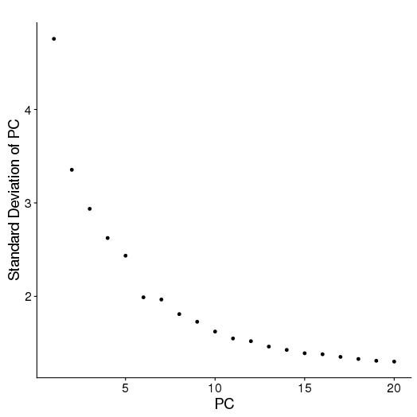 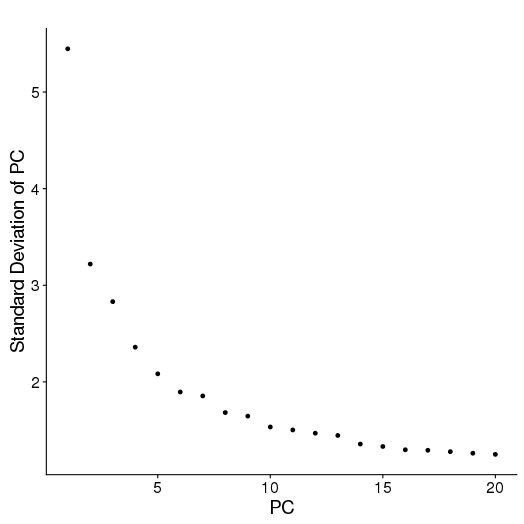
Clustering and Markers
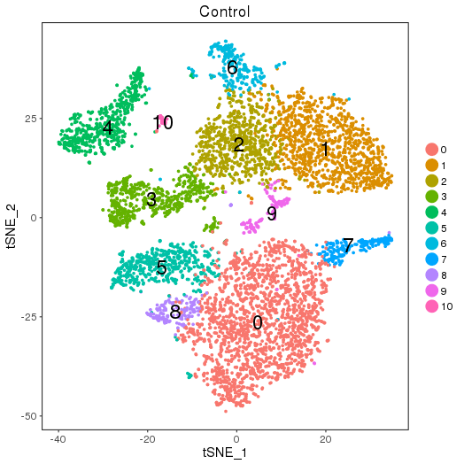 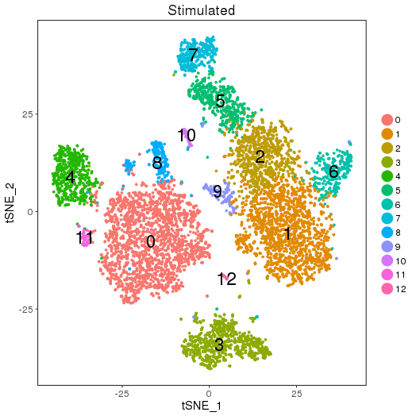
ctrl.makers.csv stim.markers.csv
Seurat objects ctrl.RDS and stim.RDS
2.2 Combined sample
setwd('/n/core/Bioinformatics/analysis/CompBio/cbio.xig.103/data/package_v2') library(Seurat) ctrl.data <- read.table("GSE96583/immune_control_expression_matrix.txt", sep = "\t") stim.data <- read.table("GSE96583/immune_stimulated_expression_matrix.txt", sep = "\t") ## Combined colnames(ctrl.data)<-paste("ctrl", colnames(ctrl.data), sep="-") colnames(stim.data)<-paste("stim", colnames(stim.data), sep="-") immune.data <-cbind(stim.data, ctrl.data) immune <- CreateSeuratObject(raw.data = immune.data, project = "IMMUNE", min.cells = 5) immune <- FilterCells(immune, subset.names = "nGene", low.thresholds = 500, high.thresholds = Inf) immune <- NormalizeData(immune) immune <- ScaleData(immune, display.progress = F) immune <- FindVariableGenes(immune, do.plot = F) immune <- RunPCA(immune,do.print = FALSE) immune <- FindClusters(immune, reduction.type = "pca", dims.use = 1:15, resolution=0.6, save.SNN =T,temp.file.location=".",force.recalc = TRUE ,print.output = FALSE) immune <- RunTSNE(immune, dims.use = 1:15, do.fast = T) TSNEPlot(object = immune, do.label = T, label.size = 6, plot.title="Immune Combined") savePlot('immune.tsne.png') saveRDS(immune,file='immune.RDS')
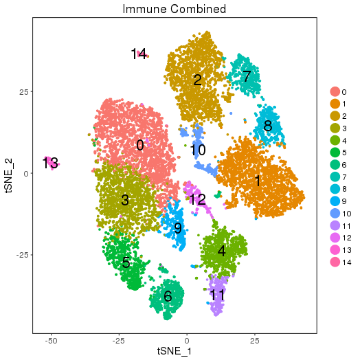
Seurat objects immune.RDS
3 PBMCs
The dataset is downloaded from 10X Genomics single cell gene expression datasets:
https://support.10xgenomics.com/single-cell-gene-expression/datasets/2.1.0/pbmc4k
https://support.10xgenomics.com/single-cell-gene-expression/datasets/2.1.0/pbmc8k
3.1 PBMC 4K
setwd('/n/core/Bioinformatics/analysis/CompBio/cbio.xig.103/data/package_v2') library(Seurat) pbmc4k.data <- Read10X(data.dir = "PBMCs/pbmc4k/filtered_gene_bc_matrices/GRCh38") pbmc4k <- CreateSeuratObject(raw.data = pbmc4k.data, min.cells = 3, min.genes=200) pbmc4k <- NormalizeData(pbmc4k) pbmc4k <- FindVariableGenes(pbmc4k, x.low.cutoff = 0.05, x.high.cutoff = 8, y.cutoff = 0.5) length(pbmc4k@var.genes) ## 1106 pbmc4k <- ScaleData(pbmc4k, genes.use = pbmc4k@var.genes, vars.to.regress = c("nUMI")) pbmc4k <- RunPCA(pbmc4k, pcs.compute = 20, weight.by.var = FALSE,do.print=FALSE) PCElbowPlot(object = pbmc4k) savePlot('pbmc4k.pce.png') ## FindClusters pbmc4k <- FindClusters(pbmc4k, reduction.type = "pca", dims.use = 1:9, resolution=0.8, save.SNN = T,temp.file.location=".",force.recalc = TRUE, k.param=15,k.scale=15) pbmc4k <- RunTSNE(pbmc4k, dims.use = 1:9, do.fast = T) TSNEPlot(object = pbmc4k, do.label = T, label.size = 6, plot.title='PBMC 4K') savePlot('pbmc4k.tsne.png') saveRDS(pbmc4k, file = "pbmc4k.RDS") ## FindAllMarkers pbmc4k.markers <- FindAllMarkers(object = pbmc4k, only.pos = TRUE, min.pct = 0.25, thresh.use = 0.25) write.csv(pbmc4k.markers,file='pbmc4k.markers.csv')
Clustering and Markers
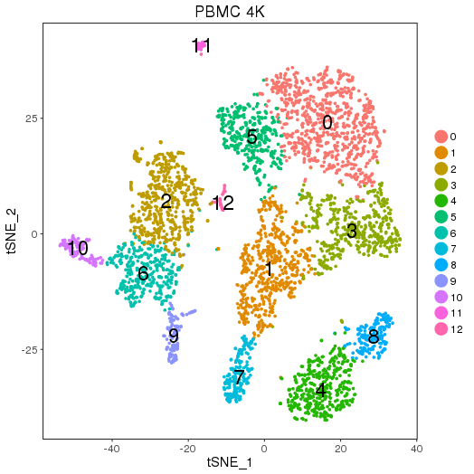
Seurat object pbmc4k.RDS
3.2 PBMC 8K
setwd('/n/core/Bioinformatics/analysis/CompBio/cbio.xig.103/data/package_v2') library(Seurat) pbmc8k.data <- Read10X(data.dir = "PBMCs/pbmc8k/filtered_gene_bc_matrices/GRCh38") pbmc8k <- CreateSeuratObject(raw.data = pbmc8k.data, min.cells = 3, min.genes=200) pbmc8k <- NormalizeData(pbmc8k) pbmc8k <- FindVariableGenes(pbmc8k, x.low.cutoff = 0.01, x.high.cutoff = 8, y.cutoff = 0.5) length(x = pbmc8k@var.genes)##1497 pbmc8k <- ScaleData(pbmc8k, genes.use = pbmc8k@var.genes, vars.to.regress = c("nUMI")) pbmc8k <- RunPCA(pbmc8k, pcs.compute = 20, weight.by.var = FALSE,do.print=FALSE) PCElbowPlot(object = pbmc8k) savePlot('pbmc8k.pce.png') ## FindClusters pbmc8k <- FindClusters(pbmc8k, reduction.type = "pca", dims.use = 1:9, resolution=0.6, save.SNN = T,temp.file.location=".",force.recalc = TRUE) pbmc8k <- RunTSNE(pbmc8k, dims.use = 1:9, do.fast = T) TSNEPlot(object = pbmc8k, do.label = T, label.size = 6) savePlot('pbmc8k.tsne.png') saveRDS(pbmc8k, file = "pbmc8k.RDS") ## FindAllMarkers pbmc8k.markers <- FindAllMarkers(object = pbmc8k, only.pos = TRUE, min.pct = 0.25, thresh.use = 0.25) write.csv(pbmc8k.markers,file='pbmc8k.markers.csv')
Clustering and Markers
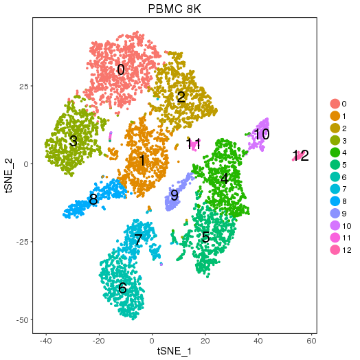
Seurat object pbmc8k.RDS
3.3 PBMC Combined
setwd('/n/core/Bioinformatics/analysis/CompBio/cbio.xig.103/package_v2') library(Seurat) pbmc4k.data <- Read10X(data.dir = "PBMCs/pbmc4k/filtered_gene_bc_matrices/GRCh38") pbmc8k.data <- Read10X(data.dir = "PBMCs/pbmc8k/filtered_gene_bc_matrices/GRCh38") ## Combined colnames(pbmc4k.data)<-paste("pbmc4k", colnames(pbmc4k.data), sep="-") colnames(pbmc8k.data)<-paste("pbmc8k", colnames(pbmc8k.data), sep="-") pbmc.data <-cbind(pbmc4k.data, pbmc8k.data) pbmc <- CreateSeuratObject(raw.data = pbmc.data, min.cells = 3, min.genes=200) pbmc <- NormalizeData(pbmc) pbmc <- FindVariableGenes(pbmc, x.low.cutoff = 0.01, x.high.cutoff = 8, y.cutoff = 0.5) length(x = pbmc@var.genes)##1434 pbmc <- ScaleData(pbmc, genes.use = pbmc@var.genes, vars.to.regress = c("nUMI")) pbmc <- RunPCA(pbmc, pcs.compute = 20, weight.by.var = FALSE,do.print=FALSE) PCElbowPlot(object = pbmc) savePlot('pbmc.pce.png') ## FindClusters pbmc <- FindClusters(pbmc, reduction.type = "pca", dims.use = 1:9, resolution=0.6, save.SNN = T,temp.file.location=".",force.recalc = TRUE) pbmc <- RunTSNE(pbmc, dims.use = 1:9, do.fast = T) TSNEPlot(object = pbmc, do.label = T, label.size = 6) savePlot('pbmc.tsne.png') saveRDS(pbmc, file = "pbmc.RDS")
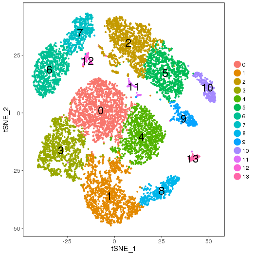
Seurat object pbmc.RDS
R version 3.4.3 (2017-11-30)
Seurat_2.2.1